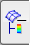

View the post-processing results
 Simulation Navigator
Simulation Navigator
-
 Results
Results
 Post-Processing Navigator
-
 Solution 1
Solution 1 -
 New Postview
New Postview
Mode 1 is shown. Because of the lesser stiffness, the solar panels are the only part of the model participating in this mode.
Continue experimenting with the other Post-Processing features as desired.